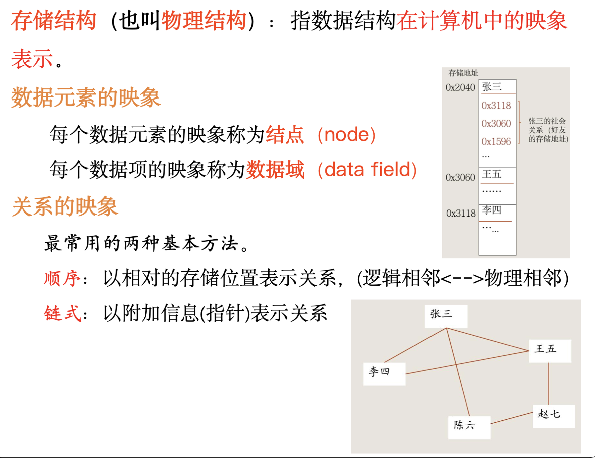
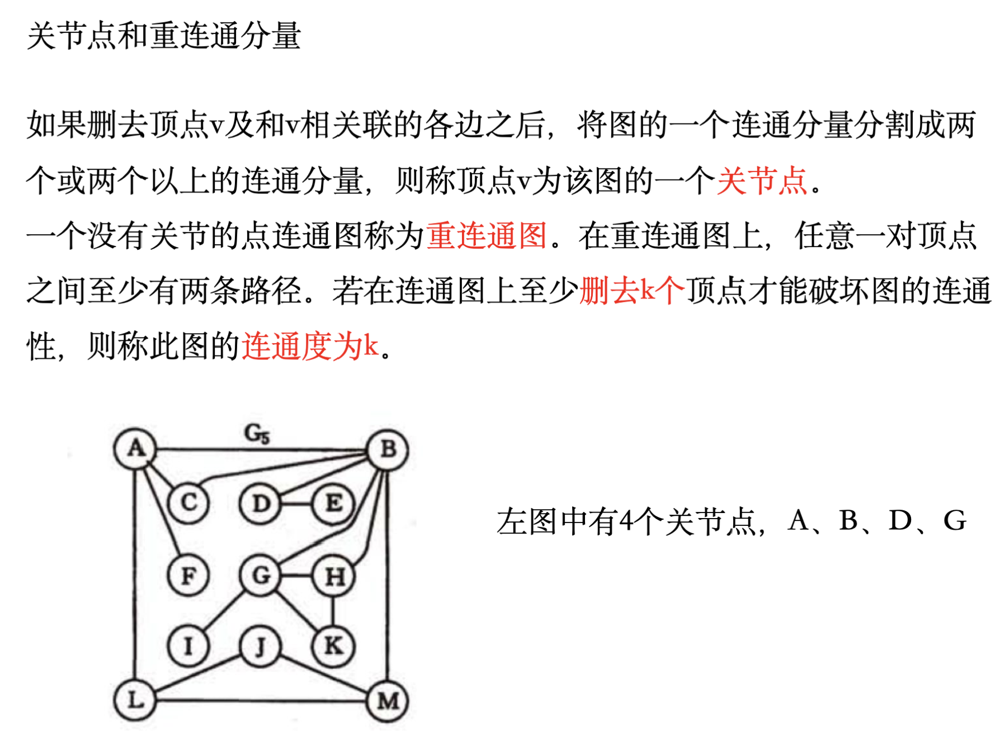
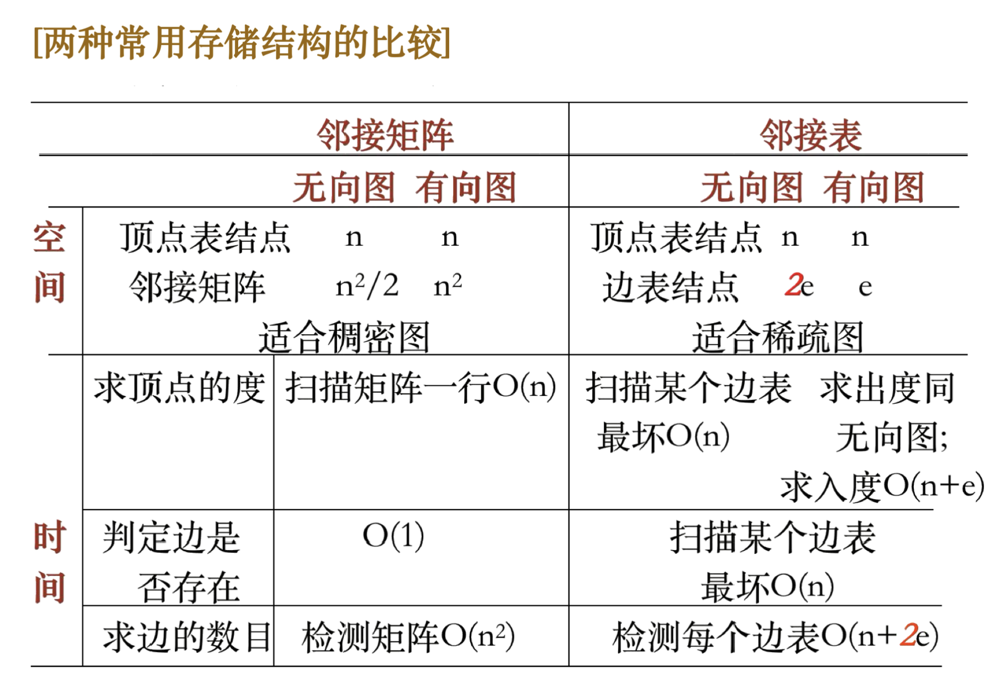
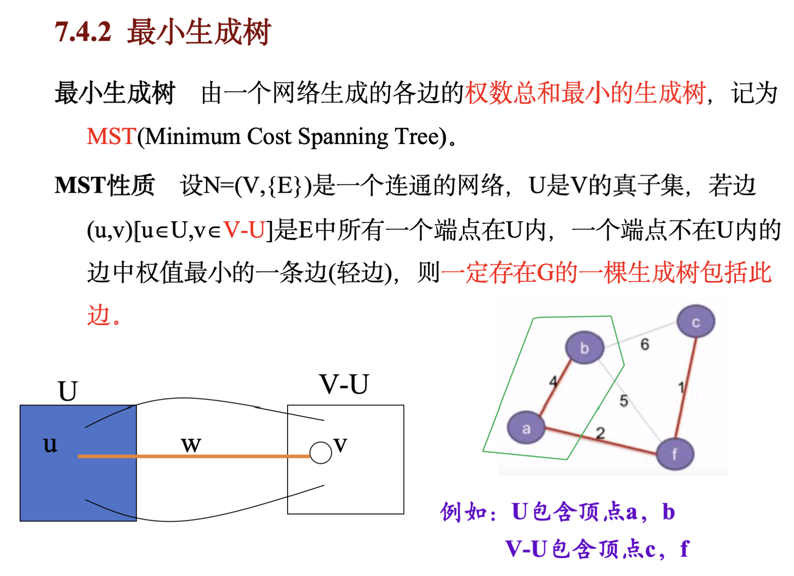

Chapter1 概论
- 数据、数据元素、数据项、数据对象、数据结构等基本概念

- 逻辑结构，存储结构及数据运算的含义及其相互关系
- 算法评价标准：正确性、可读性、健壮性、效率与存储量需求、支持分布式和并行处理的算法在大数据场景下更有优势。
Chapter2 线性表
2.2链表
- 头节点的使用：头节点的指针域指向第一个数据节点的地址
Chapter3 栈、队列
3.1 栈
3.1.1 顺序栈
- 非空栈中的栈顶指针top来指向栈顶元素的下一个位置；
- 空栈时top = base，栈中元素的数量 = top - base；
#### 3.1.2 链栈 - 链表指针方向是从栈顶指向栈底；
3.1.3 应用
- 括弧匹配检验
- 中缀表达式：左括号在栈外时优先级最高，在栈内时优先级很 低，仅高于栈外的右括号；
- 后缀表达式；
- 尾递归：递归调用出现在函数中的最后一行，并且没有任何局部变量参与最后一行代码的计算。此时支持“尾递归优化”的编程语言就可以在执行尾递归代码时不进行入栈操作；
3.2 队列
3.2.1 顺序队列
- 队空是front = rear = 0；非空队列头指针始终指向队列头元素，而尾指针始终指向队列尾元素的下一个位置。
- 循环队列：解决“假溢出”；判空采用：front ==
rear；判满采用：少用一个元素空间，当队尾指针加1就会从后面赶上队头指针，这种情况下队满的条件是：(rear+1)
% MAXSIZE == front；
#### 3.2.2 链队
Chapter4 串
4.1 串的基本操作
Concat(&T, S1, S2); // 用T返回由S1和S2连接而成的新串两串
SubString(&Sub, S, pos, len); // 用Sub返回S字符串第pos个位置开始的长度为len的子串
StrCompare(S, T); // 两串比较S > T，返回值 > 0；S = T，返回值 = 0；S < T，返回值 < 0；
Index(S, T, pos); // 在S中第pos个位置开始后的部分找到与T相同的子串，返回第一次出现的位置，未找到则返回 0
Replace(&S, T, V); // 用V替换S中与T相等的不重叠子串
StrInsert(&S, pos, T); // 在S的第pos个位置前插入T
StrDelete(&S, pos, len); // 在S中的第pos个位置开始删除长度为len的子串4.2 串的模式匹配算法
4.2.1 简单模式匹配算法Brute Force
逐个遍历字符串的每个字母，并逐个检查从它开始的长为len个的字符是否匹配；
int Index(SString S, SString T, int pos) {
i = pos; j = 1;
while (i <= S[0] && j <= T[0]) {
if (S[i] == T[j]) {
++i;
++j;
}
// 继续比较后继字符
else {
i = i-j+2;
j = 1;
}
// 指针后退重新开始匹配
}
if (j > T[0])
return i-T[0];
else return 0;
} // Index最好情况下平均时间复杂度为\(O(m +
n)\)，最坏情况下为\(O(m *
n)\)。
#### 4.2.2 KMP算法
见KMP算法。
Chapter5 数组与广义表
5.1 数组
- 数组是线性表的扩展，其数据元素本身也是线性表；
- 数组中各元素都具有统一的类型；
### 5. 2 矩阵的压缩存储 - 目的是为了节省空间；
#### 5.2.1 对称矩阵
#### 5.2.2 带状矩阵
#### 5.2.3 随机稀疏矩阵
（1）顺序存储方法：三元表法
（2）链式存储方法：十字链表法
在行、列两个方向上，将非零元素链接在一起。克服三元组表在矩阵的非零元素位置或个数经常变动时的使用不便。
### 5.3 广义表 - 广义表是由零个或多个原子或者子表组成的有限序列；
- 原子：逻辑上不能再分解的元素；
- 子表：作为广义表中元素的广义表；
- 广义表中的元素全部为原子时即为线性表，线性表是广义表的特例，广义表是线性表的推广；
- 一般用大写字母表示广义表的名称，用小写字母表示原子；
- 表的长度：表中的（第一层）元素个数；
- 表的深度：表中元素的最深嵌套层数；
- 表头：表中的第一个元素；
- 表尾：除第一个元素外，剩余元素构成的广义表。 任何一个非空广义表的表尾必定仍为广义表；
Chapter 6 树和二叉树
6.1 树
6.2 二叉树
6.3 线索二叉树
- 如果无左孩子，那利用左孩子指针指向直接前驱节点；如果无右孩子，那利用右孩子指针指向直接后继节点；
6.4 树和森林
- 孩子兄弟链表表示法：左孩子，右兄弟；
#### 6.4.1 树转化为二叉树
- 在所有兄弟结点之间加一条连线；
- 对每个结点，除了保留与其长子的连线外，去掉该结点与其他孩子的连线；
- 以根为轴心将整棵树顺时针转45度；
特点：无右子树、左支是孩子、右支是兄弟；
#### 6.4.2 森林转化为二叉树 - 先将森林的每一个树转化为二叉树；
- 从后一棵树开始，将后一棵树作为前一棵树的右子；
#### 6.4.3 二叉树转化为树/森林 - 把双亲节点的左孩子的右孩子、右孩子的右孩子、……和双亲节点连接起来；
- 删除所有双亲节点与右孩子的连线；
6.4.4 树的遍历

6.4.5 森林的遍历
- 先序遍历：逐棵先序遍历每棵子树/对应二叉树的先序遍历；
- 中序遍历：逐棵中序遍历每棵子树/对应二叉树的中序遍历；
Chapter7 图
7.1 一些基本概念：

7.2 图的基本存储结构

7.3 最小生成树

7.4 拓扑排序
7.4.1 无前驱的顶点优先算法
7.4.2 无后继的顶点优先

7.5 关键路径
7.5.1 AOE网

7.5.2 关键术语
7.5.3 求解方法
希望求解关键路径，即源点到汇点最长的路径；
- 对于事件
- 最早发生时间：源点为0，其他点 = Max(源点到该事件的路径长度)；
- 最迟发生时间：（倒着算）汇点 = 最早发生时间，其他点 = Min(下一个点最早发生时间 - 边权)；（为了保证下一个事件能最早发生，所以取最小的那个时间）
- 对于活动
- 最早发生时间：等于起始点事件的最早发生时间；
- 最迟发生时间：等于终点时间的最迟发生时间 - 边权；
关键路径为最迟发生时间 - 最早发生时间 = 0的边；
Chapter9 查找
9.1 顺序查找
int Search_Seq(SSTable ST, KeyType key) {
ST.elem[0].key = key; // 用作哨兵；
for (int i = ST.length; key != ST.elem[i].key; i--) {
return i; // 找到了就返回正确的位置，没找到返回0；
}
}监视哨的好处：无需进行边界检测，提高效率；
平均查找长度ASL：
（1）成功ASL：\((1 + n)* n /2 * \frac{1}{n} = \frac{n+1}{2}\)；
（2）失败ASL：\(1 + n\)；
9.2 折半查找
9.2.1 构建步骤
（1）mid = (1 + n)/2 作为根节点，(1 + mid - 1)/2 作为它的左孩子，(mid
+ 1 + n)/2 作为右孩子；
（2）如此构建折半查找树；
9.2.2 平均查找长度ASL
- 成功ASL：待查找的节点在第\(x\)层，需要比较的次数就是\(x\)，加权求和即可；
9.3 二叉排序树
9.3.1 构建步骤
（1）给定序列，第一个节点作为根节点；
（2）如果比上一个节点小，则放在它的左子树；比上一个节点大，则放在它的右子树；
9.3.2 调整（删除节点*p）
（1）p是叶子结点：修改双亲指针即可；
（2）p只有左（右）孩子：用它左（右）孩子的指针代替它即可；
（3）p有两个孩子：用它的中序后继（或前驱）代替它；其实就是左子树中最右或者右子树中最左的节点代替它。
9.4 平衡二叉树
9.4.1 维持平衡操作
最小不平衡子树：最下往上，第一个出现左右子树深度之差 > 1的节点。
1. LL型
新插入的节点在最小不平衡子树的左孩子的左子树；
调整方法：左孩子向右上旋转；
2. RR型
新插入的节点在最小不平衡子树的右孩子的右子树；
调整方法：右孩子向左上旋转；（和LL型刚好相反）
3.LR型
新插入的节点在最小不平衡子树的左孩子的右子树；
调整方法：左孩子的右子树先左上旋，再右上旋；
4. RL型
新插入的节点在最小不平衡子树的右孩子的左子树；
调整方法：右孩子的左子树先右上旋，再左上旋；（和LR型刚好相反）
9.5 B-树
B-树是一种多叉平衡搜索树。
对于\(m\)叉树，要求：
* 每个节点最多有\(m\)个分支，\(m-1\)个元素；
* 根节点最少有\(2\)个分支，\(1\)个元素；
* 其他节点最少有\(\left \lceil \frac{m}{2}
\right \rceil\)个分支，\(\left \lceil
\frac{m}{2} \right \rceil - 1\)个节点；
9.5.1 B-树的构建和插入
- 先查找到插入到位置进行插入；
- 如果没有上溢出，无需调整；
- 如果发生上溢出，将第\(\left \lceil \frac{m}{2} \right \rceil\)个元素（中间元素）向上移动，两边分裂（直至不发生上溢出）；
9.5.2 B-树的删除
B-树的根结点可以始终置于内存中；其余非叶结点放置在外存上，每一结点可作为一个读取单位（页/块）；
选取较大的阶次m，降低树的高度，减少外存访问次数；
9.6 B+树
Chapter 10 内部排序
#include <iostream>
#include <vector>
#include <algorithm> // 用于 sort 函数
#define MAXSIZE 20
using namespace std;
typedef int KeyType;
typedef struct {
KeyType r[MAXSIZE+1]; //r[0]闲置或作哨兵
int length;
}SqList;
void CinList(SqList &L) {
cin>>L.length;
for (int i = 1; i <= L.length; i++) {
cin>>L.r[i];
}
}
void CoutList(SqList L) {
for (int i = 1; i <= L.length; i++) {
cout<<L.r[i]<<" ";
}
}
// 基于比较的内部排序
// 直接插入排序
void InsertSort(SqList &L) {
for (int i = 2; i <= L.length; i++) { // 循环 n - 1 次
if (L.r[i] < L.r[i - 1]) {
L.r[0] = L.r[i]; // 用作监视哨
L.r[i] = L.r[i - 1]; // 算一次移动
int j;
for (j = i - 2; L.r[0] < L.r[j]; j--) {
L.r[j + 1] = L.r[j]; // 后移一位
}
L.r[j + 1] = L.r[0]; // 算一次移动
}
}
// 稳定排序；
// 排序过程中，数据前一部分逐渐有序，不过可能出现最后一趟之前数据均未在最终位置（最后一个数据为最小值，前 n - 1）个数据均需后移；
// 最好情况：只需比较 n - 1 次（即循环趟数），移动 0 次，时间复杂度为 O(n)；
// 最坏情况：第 i 趟需要比较 i 次（从 i - 1 比较到 0 ），移动 i + 1 次（前 i - 1 个均后移一次，监视哨放置 1 次，监视哨后移 1 次）；
// 比较次数 = (n + 2)(n - 1)/2，移动次数 = (n + 4)(n - 1)/2，时间复杂度为 O(n^2)；
// 平均时间 O(n^2)；
// 优化操作：
// （1）折半插入排序：在找插入位置时采用二分查找，减少了比较次数，移动次数不变；
}
// 希尔排序
void ShellSort(SqList &L) {
// 间隔步长d选点作为一组子表进行插排，不断缩小步长，代码略，不太可能考写代码；
// 不稳定排序；
// 最好情况和最坏情况和直接插排一样；
// 平均时间 O(n^1.3)；
}
// 冒泡排序
void BubbleSort(SqList &L) {
bool isSorted = true;
for (int i = 0; i < L.length - 1 && isSorted; i++) { // 最多排 n - 1 趟
isSorted = false;
for (int j = 1; j < L.length - i; j++) {
if (L.r[j] > L.r[j + 1]) { // 下沉
L.r[0] = L.r[j];
L.r[j] = L.r[j + 1];
L.r[j + 1] = L.r[0]; // 交换过程，记为3次移动
isSorted = true; // 标志进行交换；
}
}
}
// 稳定排序
// 最好情况：只需比较 n - 1 次，无需移动，时间复杂度为 O(n)；
// 最坏情况：需要 n - 1 趟，第 i 趟需要比较 n - i 次，移动 3 * (n - i) 次；
// 比较次数 = n(n - 1) /2，移动次数 = 3n(n - 1)/2，时间复杂度为 O(n^2)；
// 平均时间 O(n^2)；
// 特点是，在排序过程中，每一趟中最大的元素逐渐下沉至尾部，即最终位置上；
}
// 快速排序的划分过程
int Partition(SqList &L, int low, int high) {
KeyType pivotkey = L.r[low];
L.r[0] = L.r[low]; // 选择low作为支点，同时将low移动到辅助空间，low的位置空出来放下一个找到的元素；
while (low < high) { // low和high相遇时停止
while (low < high && L.r[high] >= pivotkey) { // 从后往前，找到第一个小于支点的元素，将它放到支点原来的位置；
high--;
}
L.r[low] = L.r[high];
while (low < high && L.r[low] <= pivotkey) { // 从前往后，找到第一个大于支点的元素，将它放到刚刚空出来的位置；
low++;
}
L.r[high] = L.r[low];
}
L.r[low] = L.r[0]; // 将支点移回去；
return low; // 返回支点位置，用于划分不同序列；
}
// 快速排序递归的辅助函数
void Qsort(SqList &L,int low, int high) {
if (low < high) {
int pivotloc = Partition(L, low, high); // 进行划分，确定支点位置；
Qsort(L, low, pivotloc - 1);
Qsort(L, pivotloc + 1, high); // 对支点左右两部分继续进行划分；
}
}
// 快速排序
void QuickSort(SqList &L) {
Qsort(L, 1, L.length);
// 不稳定排序
// 划分时，比较次数 <= n 次，时间复杂度为O(n)，移动次数为 4 次（支点移到辅助空间，大于支点的节点移动，小于节点的支点移动，支点移回去）；
// 最好情况：划分时划分为左右两个等长子序列，需要排序的趟数 <= log_2(n)，所以时间复杂度为 O(nlogn)；
// 最坏情况：初始完全逆序，每次划分只能将最大的，即支点移动到最后面，得到一个子序列，时间复杂度为 O(n^2)；
// 快速排序通常被认为是同数量级中时间复杂度为 O(nlogn) 中平均性能最好的；
// 采用递归实现的快排，递归层数 = 二叉树深度，即排序的趟数，所以理想空间开销为 O(logn) ，最坏开销为 O(n)；
// 特点是，每一趟排完后，支点的位置就在最终文字；
}
// 选择排序
void SelectSort(SqList &L) {
for (int i = 1; i <= L.length - 1; i++) { // n - 1 趟；
int k = i; // 记录待替换的元素位置；
for (int j = i + 1; j <= L.length; j++) { // 找到 i + 1 位置到结尾处最小的元素放到 i 位置；
if (L.r[j] < L.r[k]) {
k = j;
}
}
if (i != k) {
L.r[0] = L.r[i];
L.r[i] = L.r[k];
L.r[k] = L.r[0];
// 交换元素，记为 3 次移动；
}
}
// 不稳定排序，找到最小的过程中，选择的是下标最大的最小值；
// 排序过程中，前一部分数据逐渐有序，且放置在最终位置上；
// 排序趟数为 n - 1 趟，第 i 趟的比较次数为，n - i，总比较次数为 (1 + n - 1)(n - 1)/2 = n(n - 1)/2；
// 每趟排序交换 1 次，记为 3 次移动，移动次数为 3(n - 1)次；
// 时间复杂度为 O(n^2)；
}
// 完全二叉堆的概念：
// 小顶堆：每个节点的值都小于等于左右孩子的值；
// 大顶堆：每个节点的值都大于等于左右孩子的值；
// 输出堆顶元素后调整堆的操作——筛选：
// （1）将堆底元素移到堆顶，此时堆的性质被破坏，但左右子树仍保持堆的局部性质；
// （2）将此时的堆顶元素与左右孩子中较大的元素交换，如此做，直到满足了堆的性质；
// 堆的构建：给定某一序列后，从最后一个非叶子结点的子树开始从下往上调整；
// 对于完全二叉树，最后一个非叶子结点序号为 n/2；
// 筛选
void HeapAdjust(SqList &L, int root, int end) { // root 是待调整的子树根节点的序号，end 是待调整的子树的最后一个节点
L.r[0] = L.r[root]; // 存储当前堆顶元素
for (int j = 2 * root; j <= end && j + 1 <= end; j *= 2) {
if (L.r[j] < L.r[j + 1]) {
j++; // j 表示左右孩子中较大的节点；
}
if (L.r[0] >= L.r[j]) {
break; // 父节点大于左右孩子，满足大顶堆的性质；
}
L.r[root] = L.r[j]; // 孩子节点换到根节点
root = j; // 此时根节点指向交换下去的节点
}
L.r[root] = L.r[0];
}
// 堆排序
void HeapSort(SqList &L) {
// 建立堆
for (int i = L.length / 2; i > 0; i--) { // 从最后一个非叶子结点开始，逐步从下往上调整；
HeapAdjust(L, i, L.length);
}
// 每次取出最大的元素（堆顶），和堆底元素交换，重新调整堆；
for (int i = L.length; i > 1; i--) {
L.r[0] = L.r[1];
L.r[1] = L.r[i];
L.r[i] = L.r[0]; // 交换堆顶和堆底，记为 3 次移动；
HeapAdjust(L, 1, i - 1); // 调整剩余部分 1 ～ i - 1；
}
// 不稳定排序
// 对于二叉树，树高 k = 「log_2(n)」+ 1；
// 每次筛选，从根到叶子结点，最多经过 2(k - 1) 次比较（左右孩子比较，较大者与父节点比较，共 2 次），最多经过 k 次交换，即 3 * k 次移动；
// 堆排序需要经过 n - 1 次筛选；
// 时间复杂度为 O(nlogn)；
// 排序过程中，序列后面的数据逐渐有序，并且在最终位置；
// 对记录数较大的文件很有效；
}
// 2-路归并排序基本思想：
// 含有一个元素的子表总是有序的，所以对相邻的含有一个元素的子表进行合并，得到表长 = 2 的有序表；如此做直至生成表长 = n 的有序表；共需要 「log_2(n)」 趟；
// 合并两张子表(left表示第一张表的开头，mid表示第一张表的结尾，mid + 1表示第二张表的开头，right表示第二张表的结尾)
void Merge(int Source[], int* Dest, int left, int mid, int right) {
int i = left, j = mid + 1, k = left;
while (i <= mid && j <= right) {
if (Source[i] < Source[j]) { // 先判断小于条件，保证排序稳定性！！！
Dest[k] = Source[i];
i++;
}
else {
Dest[k] = Source[j];
j++;
}
k++;
}
// 此时一个数组已空，另一个数组非空，将剩余元素放入Dest；
while (i <= mid) {
Dest[k] = Source[i];
k++, i++;
}
while (j <= mid) {
Dest[k] = Source[j];
k++, j++;
}
}
// 归并排序的递归辅助函数
void MSort(int Source[], int* Dest, int start, int end) {
if (start == end) { // 当数组长度为 1 时，该数组已经有序的，不用再分解；
Dest[start] = Source[start]; // 改成 Return 也一样；
}
else {
int mid = (start + end) / 2;
int Temp[MAXSIZE]; // 辅助数组；
MSort(Source, Temp, start, mid); // 将 Source[start:mid] 归并为有序的 Temp[start:mid]；
MSort(Source, Temp, mid + 1, end); // 将 Source[mid + 1:end]归并为有序的 Temp[mid + 1:end]；
Merge(Temp, Dest, start, mid, end); // 将有序子表 Temp[start:mid] 和 Temp[mid + 1:end] 合并为 Dest[start:end]
}
}
// 归并排序
void MergeSort(SqList &L) {
MSort(L.r, L.r, 1, L.length);
// 稳定排序
// 空间复杂度为 O(n)；
// 归并趟数 = 「log_2(n)」，每趟归并需要移动 n 次，时间复杂度为 O(nlogn)；
}
// 基于比较的内部排序总结：
// 插入排序：直接插入排序、希尔排序（特点是移动次数较多）；
// 交换排序：冒泡排序、快速排序（相邻元素之间作比较，比较次数较多）；
// 选择排序：简单选择排序、堆排序（比较次数较多）；
// 归并排序；
// 稳定排序有：直接插入排序、冒泡排序、归并排序；
// 快速排序是目前基于比较的内部排序中最好的方法；
// 关键字随机分布时，快速排序的平均时间最短，堆排序次之，但后者所需的辅助空间少；
// 当 n 较小时，可采用直接插入或简单选择排序，前者是稳定排序，但后者通常记录移动次数少于前者（插入排序可能会导致 n - 1 个元素都需要移动，而选择排序每次只需要交换 1 次）；
// 当 n 较大时，应采用时间复杂度为 O(nlogn) 的排序方法(主要为快速排序和堆排序)或者基数排序的方法，但基数排序对关键字的结构有一定要求；
// 假设有 n 个值不同的元素存于顺序结构中，要求不经排序选出前 k (k <= n) 个最小元素，问哪些方法可用，哪些方法比较次数最少？这 k 个元素也要有序如何？
// 选择排序或冒泡排序：k 趟（数据比较次数约为 k * n 次）；
// 快速排序：每次仅对第一个子序列划分，直至子序列长度小于等于k；长度不足k，则再对其后的子序列划分出补足的长度即可；
// 堆排序：先建小根堆，k-1 次堆调整（数据比较次数约为 4n + (k-1)logn）；
// 基于分配的内部排序
// 桶排序
void BucketSort(SqList &L) {
// 找到数组中的最大值和最小值
KeyType maxVal = L.r[1], minVal = L.r[1];
for (int i = 2; i <= L.length; i++) {
if (L.r[i] > maxVal) maxVal = L.r[i];
if (L.r[i] < minVal) minVal = L.r[i];
}
// 计算桶的数量和范围
int bucketCount = L.length;
vector<vector<KeyType>> buckets(bucketCount);
// 将元素分配到对应的桶中
double range = (double)(maxVal - minVal + 1) / bucketCount; // 每个桶的范围
for (int i = 1; i <= L.length; i++) {
int index = (L.r[i] - minVal) / range; // 根据范围计算桶索引
if (index >= bucketCount) index = bucketCount - 1;
buckets[index].push_back(L.r[i]);
}
// 对每个桶内部进行排序
for (int i = 0; i < bucketCount; i++) {
sort(buckets[i].begin(), buckets[i].end()); // 使用 STL 的 sort 排序
}
// 将排序后的数据从桶中取出，放回原数组
int idx = 1;
for (int i = 0; i < bucketCount; i++) {
for (KeyType val : buckets[i]) {
L.r[idx++] = val;
}
}
// 稳定排序；
// 空间复杂度为 O(n + k)，其中 n 为元素数量，k 为桶的数量；
// 平均时间复杂度为 O(n + klogk)，最坏情况时间复杂度为 O(n^2)（所有元素都落在同一个桶中）；
// 适合待排序数据值域较大但分布比较均匀；
}
// 计数排序
void CountSort(SqList &L) {
int maxVal = L.r[1], minVal = L.r[L.length];
// 查找最大值和最小值
for (int i = 2; i <= L.length; i++) {
if (L.r[i] > maxVal) {
maxVal = L.r[i];
}
if (L.r[i] < minVal) {
minVal = L.r[i];
}
}
// 计数数组
int* C = new int[maxVal - minVal + 1]();
// 计数
for (int i = 1; i <= L.length; i++) {
C[L.r[i] - minVal]++;
}
int k = 1;
for (int i = minVal; i <= maxVal; i++) {
for (int j = 0; j < C[i - minVal]; j++) {
L.r[k] = i;
k++;
}
}
// 稳定排序（上述实现过程简略，没有体现稳定排序）；
// 当输入的元素是 n 个 0 到 k 之间的整数时，时间复杂度是 O(n+k)，空间复杂度也是 O(n+k)，其排序速度快于任何比较排序算法；
// 当 k 不是很大并且序列比较集中时，计数排序是一个很有效的排序算法。当 k > n 时，效率下降；
}
// 基数排序
void RadixSort(SqList &L) {
// 稳定排序；
// 设记录数为 n ，关键字位数为 d ，基数为 r；
// 每一趟，分配复杂度为 O(n)，收集复杂度为 O(r)；
// 共需要排 d 趟，所以时间复杂度 O(d * (n + r)) = O(n)（r 和 d 均为常数）；
// 辅助空间：n 个记录游标，队头指针数组[0:r - 1]和队尾指针数组[0:r - 1]，空间复杂度为 O(n + r)；
}
int main() {
SqList L;
// 测试数据 6 0 -4 8 1 -4 -6
// 答案 -6 -4 -4 0 1 8
CinList(L);
// InsertSort(L);
// BubbleSort(L);
// QuickSort(L);
// SelectSort(L);
// HeapSort(L);
// MergeSort(L);
// BucketSort(L);
CountSort(L);
CoutList(L);
return 0;
}Chapter 11 外部排序
11.1 置换选择法
意义是在内存工作区容量的限制下，获得尽可能长的初始归并段。
假设内存中用到的优先队列WA规模为\(5\)，初始待排序文件FI：
5, 20, 26, 46, 31, 25, 16, 51, 17, 28, 1
文件放入内存工作区：
WA：5,20,26,46,31；
第一趟：
WA：25,20,26,46,31，第一个归并段：5；
第二趟：
WA：25,16,26,46,31，第一个归并段：5,20；
第三趟：（不能出最小的16，要出一个比20大的）
WA：51,16,26,46,31，第一个归并段：5,20,25；
第四趟：
WA：51,16,17,46,31，第一个归并段：5,20,25,26；
第五趟：
WA：51,16,17,46,28，第一个归并段：5,20,25,26,31；
第六趟：
WA：51,16,17,1,28，第一个归并段：5,20,25,26,31,46；
第七趟：
WA：16,17,1,28，第一个归并段：5,20,25,26,31,46,51；
第八趟～第十一趟：（此时剩余待排序文件无法放入第一个归并段，生成第二个归并段）
第二个归并段：1,16,17,28；
11.2 最佳归并树
最佳归并树即\(k\)叉(阶)哈夫曼树。设初始归并段为\(m\)个，进行\(k-\)路归并。
需要补充\(y\)个虚段（用元素\(0\)表示）：\((k -
1) * x + k = m + y\)。
注意虚段在画哈夫曼树之前先添加。
11.3 败者树
对于初始为升序的归并段进行多路归并，败者树中记录的冠军节点保存的是最小关键字所在的归并段号，分支节点保存的是失败者所在的归并段号。